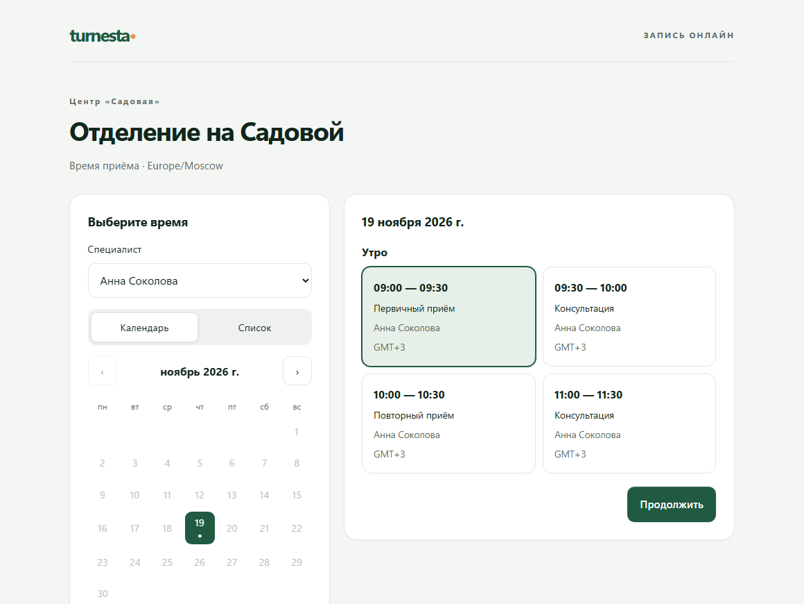
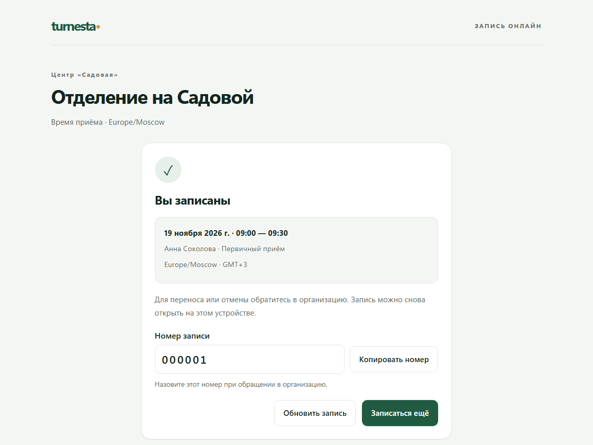
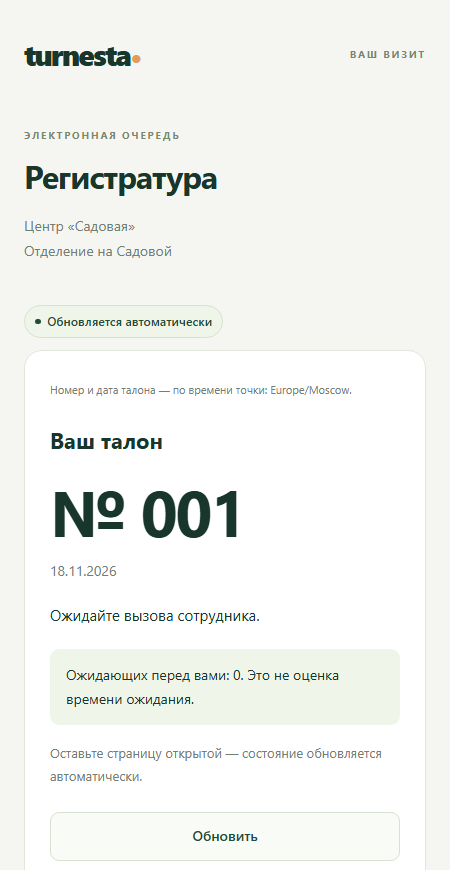
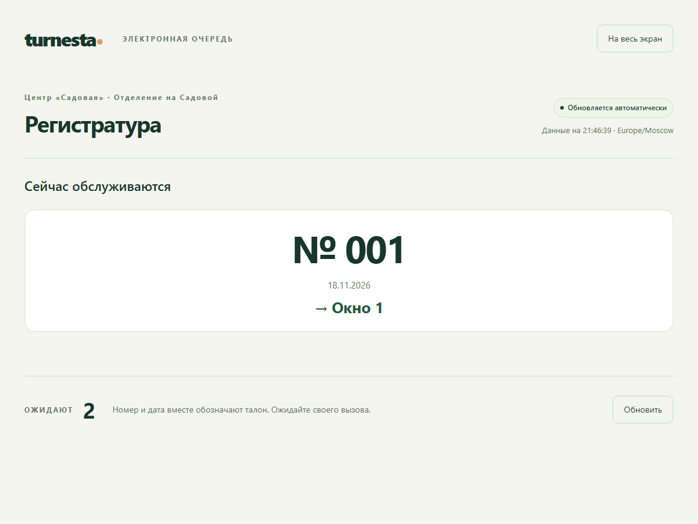

Self-hosted · Open source
Appointments and walk-ins in one workspace.
Take bookings from your website and give walk-in visitors a queue ticket by QR code. Your team manages the schedule, the line and the next call. You host the software.


Follow a visit
These seven screenshots follow a booking and a walk-in visit in v0.1.0 using synthetic data. The interface is in Russian. Select a step to see what the visitor or staff member sees.
Book an appointment




Join a queue





Run Turnesta locally
Start with Git and Docker Compose. On Windows use Git Bash and Linux containers. The installer builds the app, creates the first organization and prints the sign-in details.
git clone --branch v0.1.1 https://github.com/TimeOfAnarchy/turnesta.git
cd turnesta
./scripts/install.shWhat to expect from v0.1.1
This pre-release is for evaluation. Staff handle appointment changes and cancellations. Booking holds and reminders are unavailable. Tips is a payment simulation. Local checks cover both visits shown above. A real VPS, external SMTP and a live business website still need verification. Release notes ↗